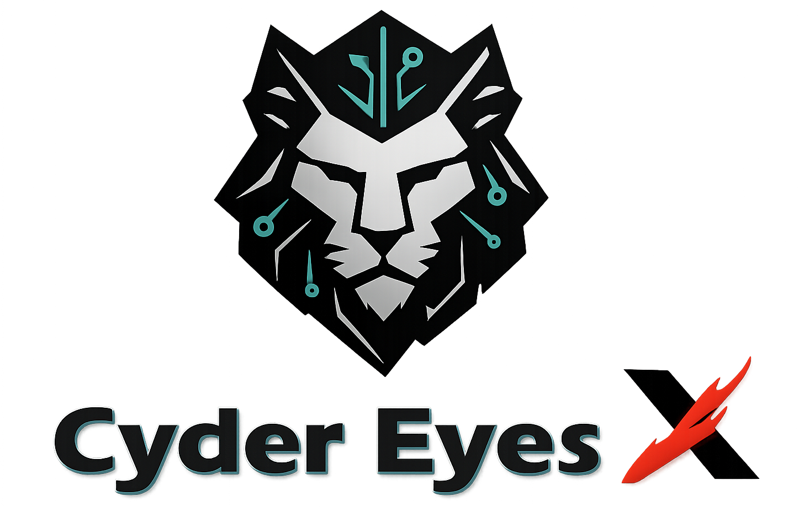
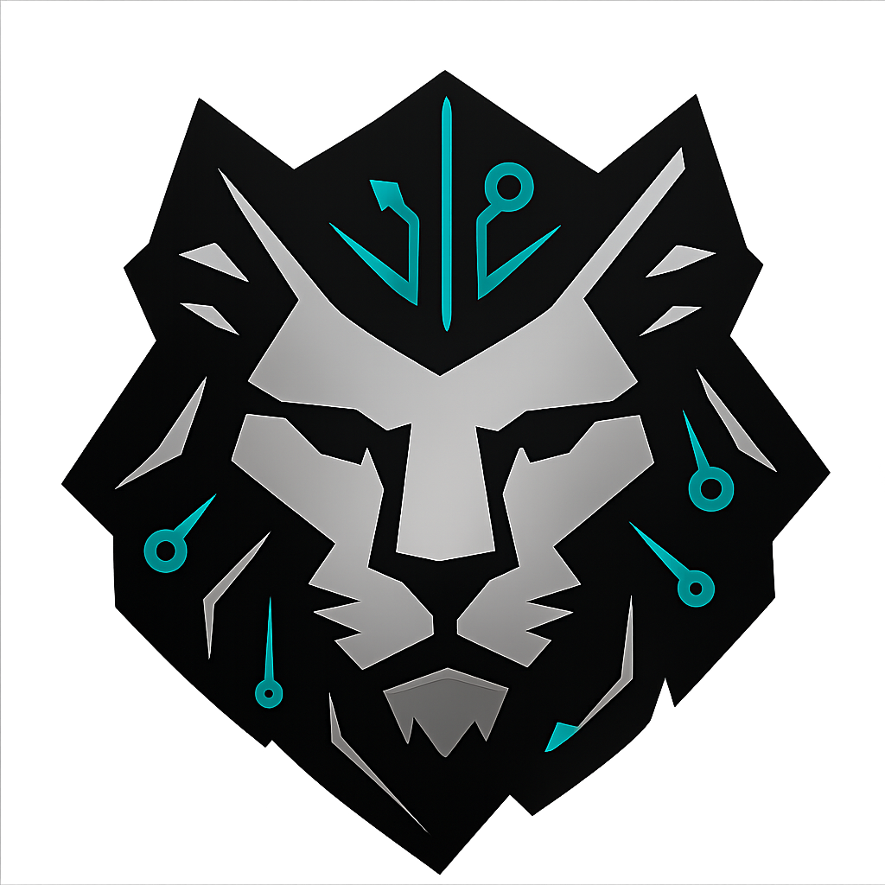
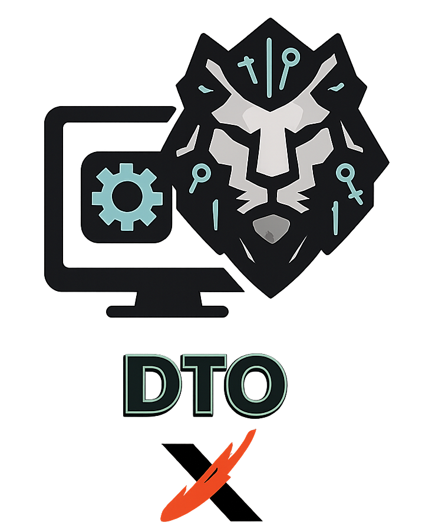
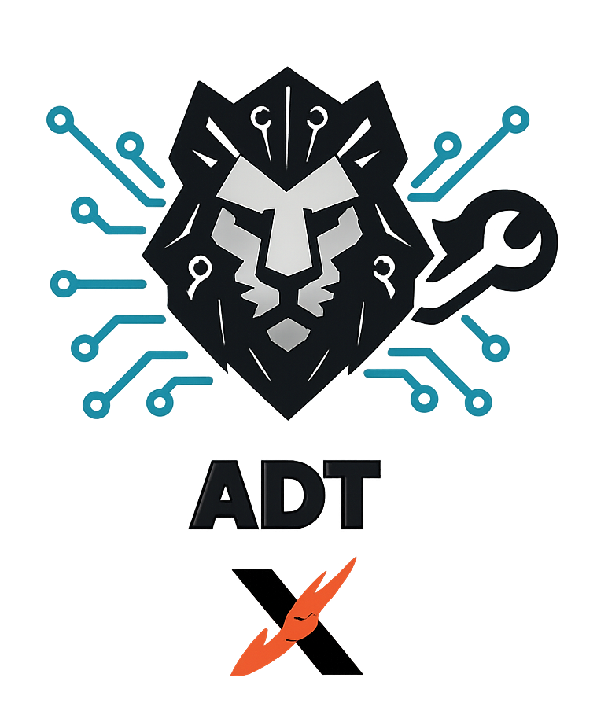
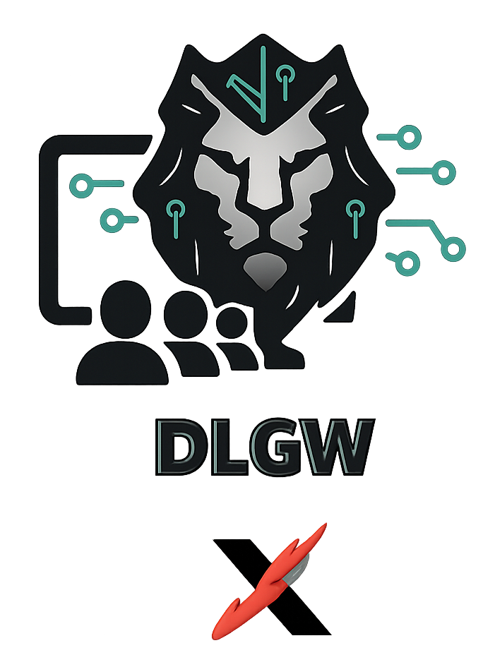

CyderEyesX builds accessibility technology. Our flagship, AccessX Tap, turns any NFC tag into audio, video, or screen-reader-ready text — so blind and low-vision students and staff can reach materials instantly, with no app to install.
Turn any printed document or object into accessible audio, video, or screen-reader-ready text with a single tap. Built for blind and low-vision students and staff — and for any school, museum, library, or business that needs accessible content on demand.
Text renders as clean pages screen readers read natively. PDFs, audio, and video play inline — no app, no download.
Change the content behind a tag anytime — the NFC tag is never reprogrammed. Password-protect or expire links when needed.
See taps over time, devices, and top resources — the data departments need to justify accessibility budgets.
CyderEyesX serves people in English and Spanish to reduce language barriers alongside accessibility barriers. If you need bilingual onboarding or materials, we align delivery format and pacing to support comprehension and confidence.
Clear explanations in English and Spanish, with terminology adapted for beginners.
Concepts are introduced step-by-step, avoiding jargon whenever possible.
Designed to support different abilities, learning styles, and real-world use cases.
Alongside our accessibility work, CyderEyesX shares honest, plain-language education about the crypto world — built from real, hard-earned experience — to help newcomers understand the risks and avoid the mistakes that cost others dearly.

CyderEyesX started after noticing a recurring gap: many people were trying to learn about digital assets and emerging technologies through scattered sources—often in Spanish, often outdated, and sometimes framed in ways that increased risk instead of understanding.
Our goal is to teach foundations that make people safer and more confident: how to evaluate information, avoid common scams, protect accounts and devices, and build responsible digital habits that last.
Never share private keys, seed phrases, or credentials. In crypto and many digital systems, transactions are irreversible—so prevention and verification matter.
Structured learning paths designed to build confidence, safety, and long-term digital competence.

Secure digital workflows, essential tools, and safe online foundations.

Privacy configuration, system hardening, and responsible infrastructure use.

Community-based education focused on access, inclusion, and confidence.